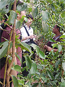
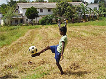
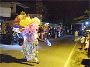
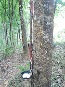
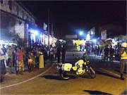

シナモン畑 |
「10代の頃から途上国に興味があり、学生の間に必ず途上国に留学すると決めておりました。
途上国に関する書籍や講義を聞くなかでスリランカという国に興味をもちました。
そして本プログラムでは、スリランカでホームステイして現地の生活を体験できるだけでなく、英語力の向上やボランティア活動、また低開発村の視察ができると知り、参加を決めました。
予算内でできるだけ長期間滞在しようと思い45日間の参加にしました。
当初は短すぎるかと思いましたが、毎日が刺激的で十分過ぎるほどでした。
|
英語のレッスンは完全に会話を重視しており、ホストマザーが先生をしてくださったので非常に話しやすかったです。
人生で最も長く英語を使っての会話をいたしました。
そしてただ話すだけではなく、適宜こちらの弱点を指摘してくださり日々向上していくのがわかりました。
また、宿題は英語で主にニュースを要約し、それに対する自分の意見をまとめるという内容でした。
この宿題は英語力の向上のみならず、頭の整理や、根拠の示し方などを学ぶことができたので、帰国後も大変役に立っております。
また途中から別の先生もこられ、二人のスリランカ政治に対する意見の違い等を知ることができ、非常に面白かったです。
英会話力の向上は勿論ですが、現地人の意見を知れたというのが何よりも嬉しかったです。
孤児院ボランティアについて
スリランカでは教育格差が問題と出発前に知ったので、高等教育を受けられない孤児の事情を知るために孤児院を選びました。
食事の配膳など簡単な作業のお手伝い程度しかできませんでしたが、やはり現地の子供たちと会話できたのが大きな成果です。
最初は両者とも緊張しましたが、私が自分の名前をシンハラ語で紙に書いた所、皆一斉に寄ってきて名前を呼んでくれ、そこから一気に打ち解けられました。
|

孤児院ボランティア |
施設の方々も教育格差は十分に認識しているので、学歴が必要とされないが大きな需要があり、食うに困らない職業として大工の道を子供達に示しているとのことでした。
そのため施設の増改築を子供達自ら行っており、私もそれを手伝いました。
プロがやったと思えるほどのできで、『日本の子供にはこんなことできない』と英語で伝えると皆嬉しそうに笑っていました。
施設を出たあとは、大工としてスリランカだけでなく中東等にも働きにいくそうです。
実際に大工として働いている施設出身の方も手伝いに来ておられたので、本当に大工として働けるだけの技術を身に付けて出ていけるのだと思います。
一方で、施設には犯罪を犯して裁判を待つ子供や、貧困によって家庭単位で入所しておられる方々もおられました。
スリランカにはそういった方々を受け入れる場所が不足しており、私の訪れた孤児院が受け入れるしかないそうです。
私が帰る際には、子供達が膝ま付いて挨拶してくれました。
これはスリランカでは目上の人間に対して行う最上位の挨拶で、それをされて驚きと同時に嬉しくもなりました。
課外活動について
上記の他に、ホストマザーが気を効かせて様々な所に連れていってくださいました。
病院への同行、ペラペラ祭り、現地日本人とのお食事、青年海外協力隊と他大学の学生さんとシナモン畑を視察等、現地を感じるものから、沢山の人々との出会いまで様々でした。
まず病院は基本的な診察が無料で、薬や検査は高額になるとのことでした。
スリランカは病院がタダという言葉の真相を知ることができました。

ペラヘラ祭り♪ |
ペラペラ祭りは、最終日直前で行きました。
親戚一同でバス(バスドライバーの親戚の方が仕事で使うものなので貸し切り)に乗っていきました。
ダンサーは徐々に減少してビジネス化していること。
仏教、シンハラ、タミル文化の融合であることなどを教えていただけました。
間近で見た象は少し怖かったです。 |
次に日本人とのお食事です。
ホストマザーの知り合いに現地で日本語学校をしている方がおられ、お家に招いて一緒にお食事しました。
その方も本プログラムでスリランカを訪れ、その魅力に取りつかれて現地で働くことを決心したそうです。
ご友人の方々もご一緒し、現地での大変さや思い出話し、アドバイス等をいただきました。
現地で働く日本人の苦労や楽しさを知ることができたのは嬉しかったです。
最後にシナモン畑の視察です。
これは完全に偶然時期が重なったため実現できました。
日本から来る学生さんがシナモン加工器具を製作し、それが現地で受け入れられるかを知るために訪れるとのことでした。
そしてそのサポートとして現地語を話す青年海外協力隊の方も同席した形です。
全部で5,6人の団体で行きました。
畑の方は歓迎してくださり、一緒に果物を食べたりしました。
その地域では雨が何年も降らず苦労していると仰っていました。
また、青年海外協力隊の方は2ヶ月でシンハラ語が話せるようになったとのことで大変驚きました。
|

低開発村視察 |
この他に、観光地にも一人で行きました。
かつてヨーロッパに支配されていたゴールという観光地です。
スリランカ文化とヨーロッパ文化が入り交じり、独特の雰囲気を持つ町です。
その雰囲気を満喫しようと街を何周もしました。
そして終電を逃しました。
夕方の5時頃でしたので大変驚きました。
ホストマザーの電話に掛けましたが、タイミングが悪くて繋がらず(洗濯中だったそうです)もう帰れないかと思い、少し焦りました。
しかし現地ではバスが夜遅くまで走っていることを思いだし、バス停に行きました。
そこでバス停の人に英語で帰り方を尋ねました。
レッスンの成果です。
しかしその方は英語があまり分かっていなかったようでした。
そこで、紙に簡単な地図と地名を書きました。
すると、乗るべきバスと乗り換えのバス停を教えてくださいました。
良かった帰れると安心しました。
しかしその後、乗り換えのバス停で問題がありました。
バスが多すぎてどれに乗るべきか分からないのです。
そこでまた英語で現地バススタッフに聞きました。
今度の方は英語がわかる上、非常に優しい方でバスが来るまで一緒にお話までしてくれました。
その時ホストマザーからの電話もあり、スタッフが示したバスで帰れると言われて安心しました。
結局6時間かけて夜10時に家につき、『よく帰ってこれたね』と言われました。
大きなトラブルでしたが今となってはいい思い出です。
この他にはキャンディという所にも行きました。
こちらでは終電を逃しませんでした。
しかし、片言の日本語を話す怪しい人などに話しかけられたので、これまたレッスンの成果である英語を話して、往なしました。
これらの経験から、レッスンは本当に実践的なのだなと確信しました。

ペラヘラ祭り☆ |
他にも、スーパーのレジで１スリランカルピー足りなくても買えてしまったことや、非常事態宣言が発令されてフェイスブックが使えなくなったこと、それに伴い親から心配のラインメッセージが来たこと、スリランカ出国直前にパスポート情報の間違いに気づき自分でスリランカ航空に電話して英語で解決したことなど、本当に成長できたプログラムでした。
今後このような経験ができる機会は少ないと思うので、本当にいい経験ができたと思います。
実は日本を出発した日は20歳の誕生日で、成人の儀式になっていました。
無事に達成できたと思っています。
逢坂さん、本当にありがとうございました。」
大垣孝様の１日の流れはこちらです。 |
|